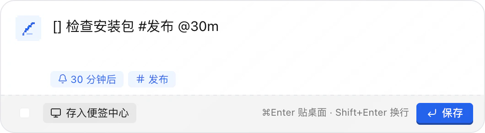

安装
macOS
在下载区选择通用 DMG，打开后把 InkPin 拖到「应用程序」。通用版支持 Apple Silicon 和 Intel。若系统拦截首次打开，请查看macOS 首次打开说明。
也可以用 Homebrew。pinnote 是配方名，装好后在「应用程序」里找 InkPin。
brew install --cask zhong0118/tap/pinnote如果 Homebrew 要求先信任配方，运行下面的命令，再重新安装。
brew trust --cask zhong0118/tap/pinnoteWindows
在下载区切到 Windows，下载 x64 EXE 安装程序。需要 MSI 时可以选同一栏的 MSI 安装包。界面里显示 InkPin，1.4.0 的安装包文件使用 PinNote 名称。
从旧版升级
升级前可在「设置 → 数据与更新」手动创建一份备份。平时通过 Homebrew 安装的用户可以运行以下命令。
brew update
brew upgrade --cask --greedy zhong0118/tap/pinnote手动安装的用户可在托盘选择「检查更新」，也可以退出应用后从官网下载新版。如果 macOS 的「应用程序」里同时出现 PinNote.app 和 InkPin.app，先启动新版确认便签，再把旧应用移出「应用程序」。
升级后，便签中心、归档和回收站仍读取原来的本机数据目录。
写第一张便签
- 在 Mac 按 ⌘ ⌥ Space，在 Windows 按 Alt Shift Space，打开快速速记。
- 输入
[] 检查安装包 #发布 @30m。[]创建一个待办，#发布加上标签，@30m设置 30 分钟后的提醒。 - 按 Enter 存进便签中心。按 Mac 的 ⌘ Enter 或 Windows 的 Ctrl Enter，直接把便签贴到桌面。
设置提醒需要系统通知权限。权限关闭时便签仍会保存，开启权限后可回到便签中补设提醒。


收进屏幕边缘
- 在便签中心选择一张便签，点「放到桌面」。标题栏上的置顶按钮可以让便签留在其他窗口上方。
- 点击收起按钮可缩成胶囊。也可以把窗口或胶囊拖到屏幕左右边缘，松开后会收成标签。
- 将光标停在标签上看摘要和待办，点击展开。结束后可再次收起，或将便签收回中心。
备份、恢复和导出
在便签中心打开「设置 → 数据与更新」。可以打开数据目录、立即备份、从备份恢复，或把可导出的便签存成 Markdown 文件。
- macOS 数据目录
~/Library/Application Support/com.pinnote.app - Windows 数据目录
%APPDATA%\com.pinnote.app
换电脑时可先退出 InkPin，再复制整个目录。若只需文稿，可以选择「导出全部」。